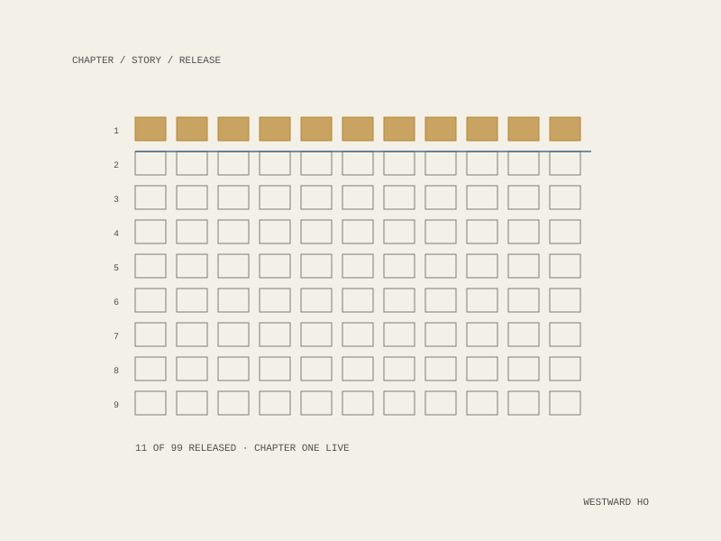
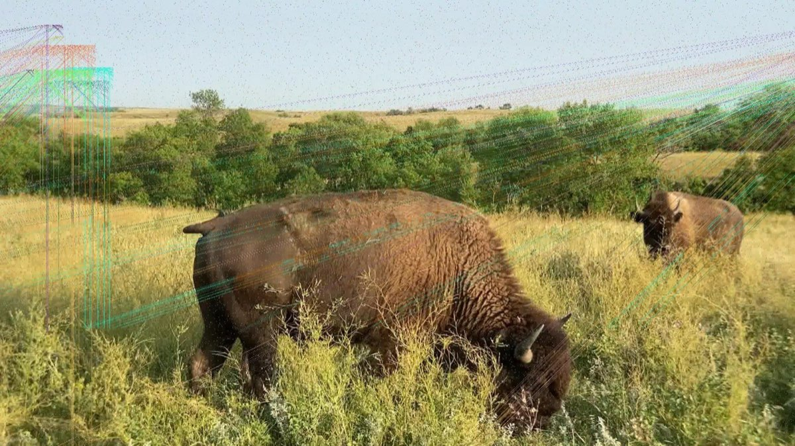
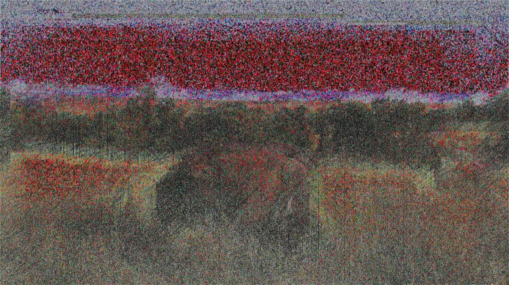
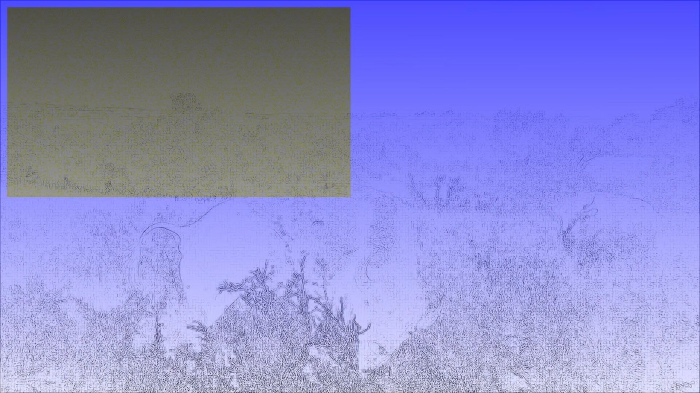
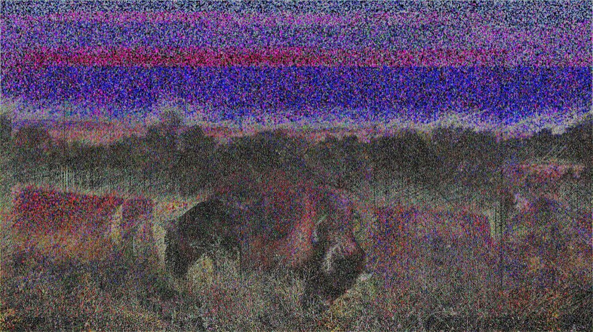

Evertunes
Evertunes Studio works on the principle that everything has a value, though not necessarily a price. Westward Ho is its long-form work: the true story of the conquest of the American west, told in nine chapters of eleven stories each, in generative video and music.





The structure
Ninety-nine works, released chapter by chapter rather than dropped at once. Each story is unique, with varying qualities. The eleven stories in Chapter One are live, and exist to begin undoing the myths of the Westward Expansion. Each story description propels the collection forward, while the music and video amplify the narrative.
Chapter One is told in pieces named for what they describe: Jamestown, Colonial Hunger, The peaceful chief, Hunting, Lynched for witchcraft, Pagan Name, The European Ways, or Else, One Acre and No Mule, They Give, and Then Take it Away, Template for Future Ripoffs, Myth Four: The West was wilderness.
What a story carries
Each piece is a video work with its own written account. Colonial Hunger tells the third year of drought at Jamestown: the settlers had been on friendly terms with the Indian groups around them, until 1609, when the native federation’s chief Powhatan grew concerned about the drought and about the English stealing from Indian villages, and forbade trade and barred them from poaching animals. The colony began to starve.
Every work carries a set of measured traits alongside its chapter (Generation, Illusion, Anthropocene Factor, Epigenetic Trauma), so that the qualities that vary between stories are stated rather than left to be felt.
Where it lives
Minted as ERC-1155 on Ethereum under evertunes-studio, active since December 2021. The chain here is a release mechanism and a ledger of what was issued, not the subject.
Westward Ho
9 chapters × 11 stories = 99
Chapter One live
Chapter
Generation
Illusion
Anthropocene Factor
Epigenetic Trauma